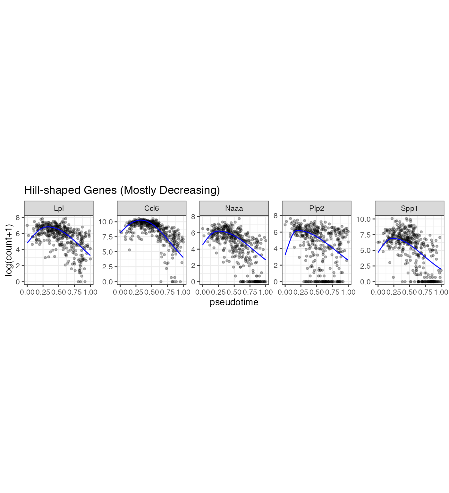
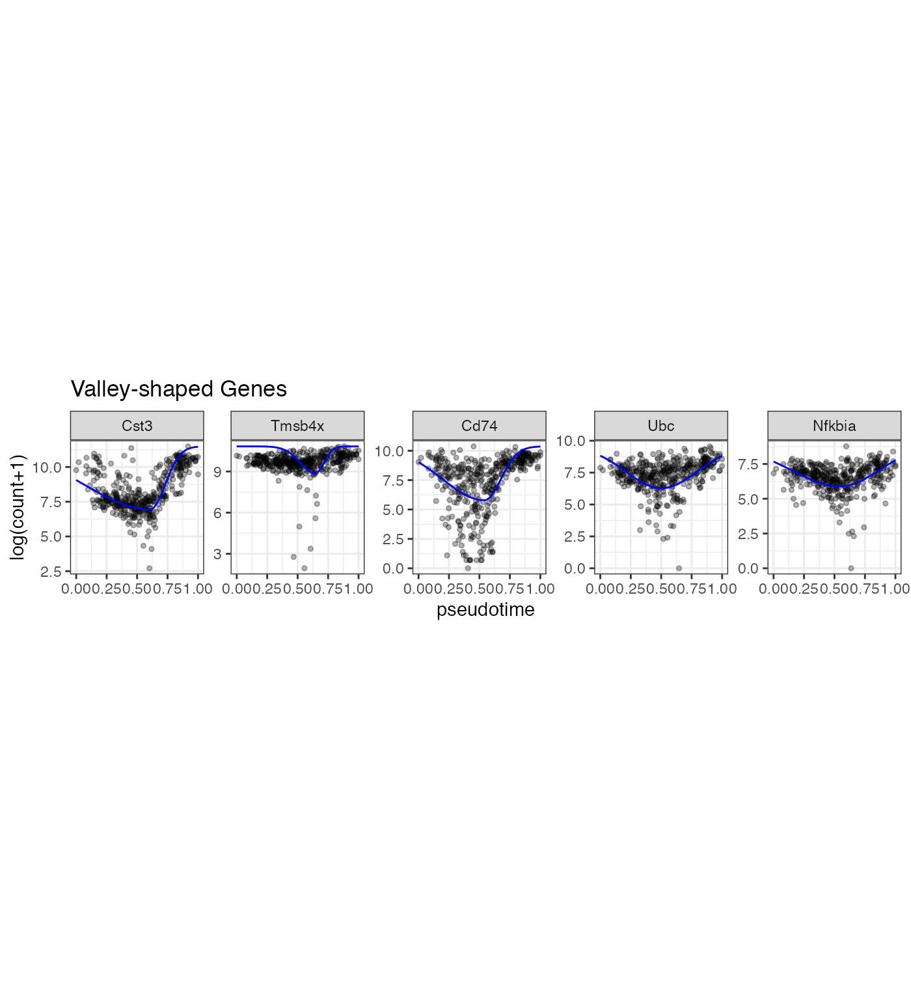
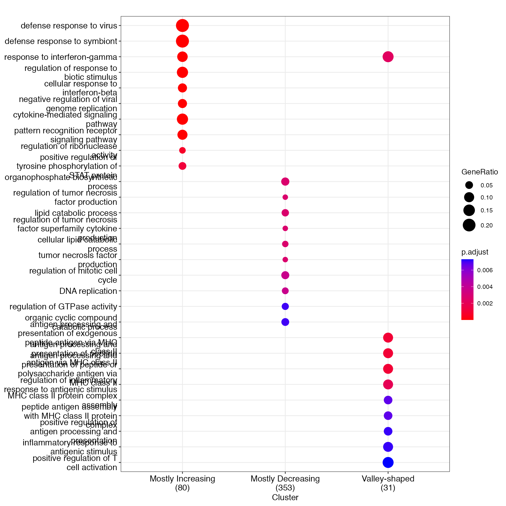
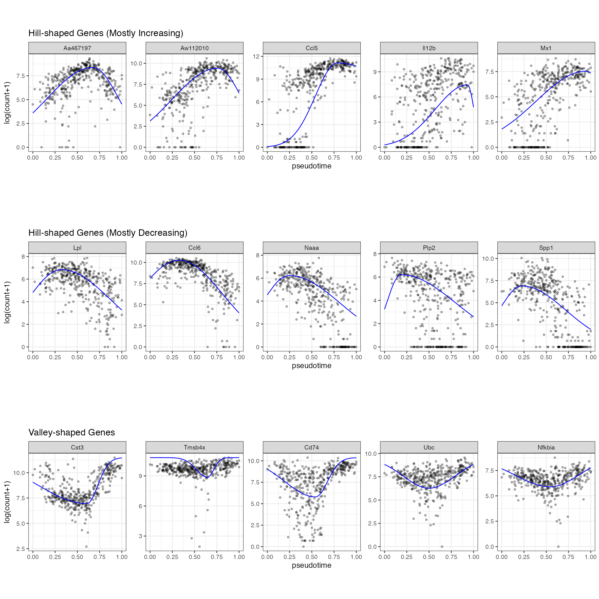
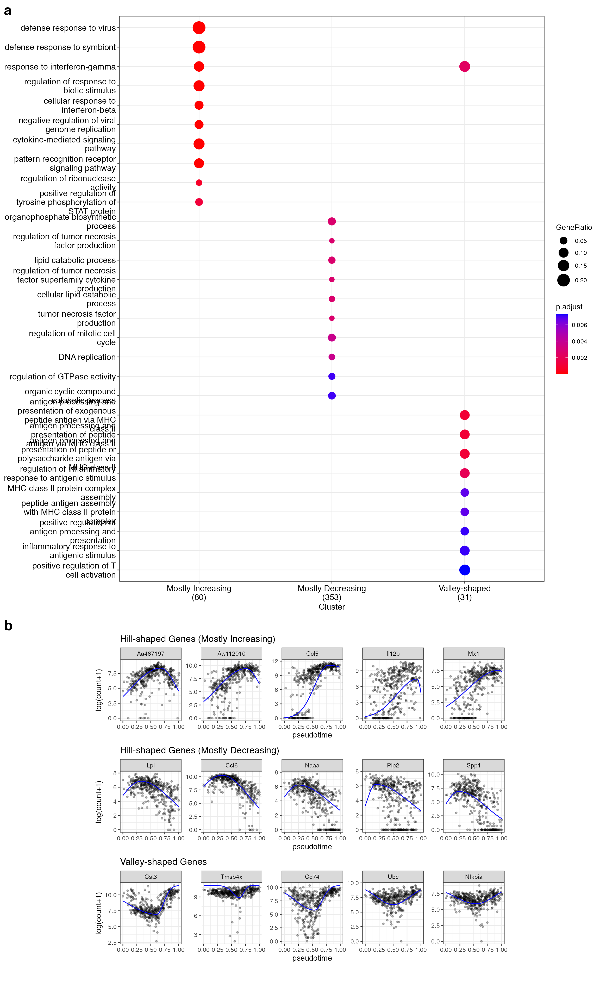

Real Data Analysis Example 2
Dongyuan Song
Bioinformatics IDP, University of California, Los Angelesdongyuansong@ucla.edu
Lehan Zou
Dertment of Statistics, University of California, Los Angeleslehanz77@g.ucla.edu
Shiyu Ma
Department of Statistics, University of California, Los Angelessylviama1026@g.ucla.edu Source:
vignettes/RealDataAnalysis2.Rmd
RealDataAnalysis2.RmdReal Data Analysis Example 2
scGTM identifies informative gene expression trends after immune cell stimulation.
As in the second real data example, we use the scGTM to categorize gene expression trends in mouse dendritic cells(DCs) after simulation with lipopolysaccharide (LPS).
suppressPackageStartupMessages(library(tidyverse))
suppressPackageStartupMessages(library(SingleCellExperiment))
suppressPackageStartupMessages(library(ComplexHeatmap))
suppressPackageStartupMessages(library(clusterExperiment))
suppressPackageStartupMessages(library(viridis))
suppressPackageStartupMessages(library(useful))
suppressPackageStartupMessages(library(RColorBrewer))
suppressPackageStartupMessages(library(umap))
suppressPackageStartupMessages(library(plotly))
suppressPackageStartupMessages(library(clusterProfiler))
suppressPackageStartupMessages(library(nichenetr))
suppressPackageStartupMessages(library(ggpubr))
suppressPackageStartupMessages(library(org.Hs.eg.db))
suppressPackageStartupMessages(library(org.Mm.eg.db))
theme_set(theme_bw())
LPS_sce <- read_csv("LPS data.csv")## Rows: 390 Columns: 4018
## ── Column specification ────────────────────────────────────────────────────────
## Delimiter: ","
## chr (1): Unnamed: 0
## dbl (4017): pseudotime, CCL5, CXCL10, LYZ2, CCL4, IL12B, CCL22, IL1B, LYZ1, ...
##
## ℹ Use `spec()` to retrieve the full column specification for this data.
## ℹ Specify the column types or set `show_col_types = FALSE` to quiet this message.
Poisson_para <- read_csv("Poisson_para.csv")## New names:
## Rows: 4016 Columns: 26
## ── Column specification
## ──────────────────────────────────────────────────────── Delimiter: "," chr
## (2): gene_index, Fisher dbl (19): ...1, negative_log_likelihood, mu, k1, k2,
## t0, t0_lower, t0_upper,... lgl (5): phi, sd, alpha, beta, Design_para
## ℹ Use `spec()` to retrieve the full column specification for this data. ℹ
## Specify the column types or set `show_col_types = FALSE` to quiet this message.
## • `` -> `...1`
gene_counts <- gene_counts %>% tidyr::pivot_longer(!c("pseudotime", "cell_id"), names_to = "gene") %>% dplyr::mutate(`log(count+1)` = log1p(value))Poisson
## # A tibble: 2 × 2
## Transform `n()`
## <dbl> <int>
## 1 0 2341
## 2 1 1675Select significant genes
Poisson_new <- Poisson_para %>% dplyr::mutate(nzp = rowMeans(LPS_counts!=0))%>% dplyr::mutate(Poisson_para, nllik = Poisson_loglik) %>% dplyr::mutate(llk_diff = 2*(nllik - negative_log_likelihood)) %>% dplyr::arrange(desc(llk_diff)) %>% dplyr::mutate(pvalue = pchisq(llk_diff, 3, lower.tail = FALSE)) %>% dplyr::mutate(adj_pvalue = p.adjust(pvalue, "BH")) %>% dplyr::filter(adj_pvalue < 0.01)
Poisson_new## # A tibble: 2,338 × 31
## ...1 gene_index negative_…¹ mu k1 k2 t0 phi sd alpha beta
## <dbl> <chr> <dbl> <dbl> <dbl> <dbl> <dbl> <lgl> <lgl> <lgl> <lgl>
## 1 918 GU332589 191392. 8.99 0.210 8.60 0.772 NA NA NA NA
## 2 1 CCL5 191664. 11.1 7.88 0.912 0.792 NA NA NA NA
## 3 9 GM11428 217635. 10.7 0.176 36.6 0.623 NA NA NA NA
## 4 3 LYZ2 211794. 11.1 0.354 16.5 0.575 NA NA NA NA
## 5 3034 ACTB 1287. 2.29 2.18 21.5 0.579 NA NA NA NA
## 6 171 CST3 10165. 4.53 1.69 33.3 0.608 NA NA NA NA
## 7 358 FTH1 221830. 10.4 0.296 13.3 0.750 NA NA NA NA
## 8 14 CCL17 47407. 4.00 3.13 3.50 0.519 NA NA NA NA
## 9 1695 AK140265 161029. 8.27 0.152 5.24 0.652 NA NA NA NA
## 10 2003 FTL1 214900. 10.4 7.83 0.536 0.296 NA NA NA NA
## # … with 2,328 more rows, 20 more variables: t0_lower <dbl>, t0_upper <dbl>,
## # t0_std <dbl>, k1_lower <dbl>, k1_upper <dbl>, k1_std <dbl>, k2_lower <dbl>,
## # k2_upper <dbl>, k2_std <dbl>, mu_lower <dbl>, mu_upper <dbl>, mu_std <dbl>,
## # Fisher <chr>, Transform <dbl>, Design_para <lgl>, nzp <dbl>, nllik <dbl>,
## # llk_diff <dbl>, pvalue <dbl>, adj_pvalue <dbl>, and abbreviated variable
## # name ¹negative_log_likelihoodConvert gene name
Poisson_new <- Poisson_new %>% mutate(gene_index = sapply(gene_index, function(x) {
gene <- str_split(x, "-")[[1]]
if(length(gene) > 1) {
gene <- str_to_title(gene)
gene <- paste(gene[1], gene[2], sep = "-")
} else {
gene <- str_to_title(gene)
}
gene <- gsub("rik", "Rik", gene)
gene
}))
gene_counts <- gene_counts %>% mutate(gene = sapply(gene, function(x) {
gene <- str_split(x, "-")[[1]]
if(length(gene) > 1) {
gene <- str_to_title(gene)
gene <- paste(gene[1], gene[2], sep = "-")
} else {
gene <- str_to_title(gene)
}
gene
}))Plot curve
gene_curve <- function(t, mu, k1, k2, t0) {
if(t <= t0) v <- mu*exp(-k1*(t-t0)^2)
else v <- mu*exp(-k2*(t-t0)^2)
v
}
gene_predict <- function(gene, pseudotime) {
i = Poisson_new %>% dplyr::filter(gene_index == gene) %>% as.vector()
res <- gene_curve(t = pseudotime, mu = as.numeric(i[4]), k1 = abs(as.numeric(i[5])), k2 = abs(as.numeric(i[6])), t0 = as.numeric(i[7]))
res
}
gene_predict2 <- function(gene_use, pseudotime) {
i = Poisson_new %>% dplyr::filter(gene_index == gene_use) %>% as.vector()
gene_max <- gene_counts %>% group_by(gene) %>% dplyr::summarise(max_value = max(`log(count+1)`)) %>% dplyr::filter(gene == gene_use) %>% .$max_value
res <- gene_curve(t = pseudotime, mu = as.numeric(i[4]), k1 = abs(as.numeric(i[5])), k2 = abs(as.numeric(i[6])), t0 = as.numeric(i[7]))
gene_max - res
}Add scKGAM prediction
we use the scGTM’s confidence levels of the three parameters \(t_0\) , \(k_1\) , and \(k_2\) to categorize the 2405 genes into three types: 1) hill-shaped and mostly increasing genes 2) hill-shaped and mostly decreasing genes 3) valley-shaped genes ### Plot some genes
gene_vec1 <- Poisson_new %>% dplyr::arrange(desc(llk_diff)) %>% dplyr::filter(Transform == 0) %>% dplyr::filter(t0_lower > 0.6 & k1_lower > 1)%>% dplyr::arrange(desc(nzp))
gene_vec <- gene_vec1$gene_index[1:5]
p1 <- gene_counts %>% dplyr::filter(gene %in% gene_vec) %>% dplyr::mutate(prediction = mapply(gene = gene, pseudotime = pseudotime, FUN = gene_predict)) %>% dplyr::mutate(gene = factor(gene, levels = gene_vec)) %>% ggplot(aes(x = pseudotime, y = `log(count+1)`)) +geom_point(size = 1, alpha = 0.3) + geom_line(aes(y = prediction), color = "blue") + facet_wrap(~gene, scales = "free_y", nrow = 1) +theme(aspect.ratio = 1) + ggtitle("Hill-shaped Genes (Mostly Increasing)")
p1
gene_vec2 <- Poisson_new %>% dplyr::arrange(desc(llk_diff)) %>% dplyr::filter(Transform == 0) %>% dplyr::filter(t0_upper < 0.4 & k2_lower > 1) %>% dplyr::arrange(desc(nzp))
gene_vec <- gene_vec2$gene_index[1:5]
p2 <- gene_counts %>% dplyr::filter(gene %in% gene_vec) %>% dplyr::mutate(prediction = mapply(gene = gene, pseudotime = pseudotime, FUN = gene_predict)) %>% dplyr::mutate(gene = factor(gene, levels = gene_vec)) %>% ggplot(aes(x = pseudotime, y = `log(count+1)`)) +geom_point(size = 1, alpha = 0.3) + geom_line(aes(y = prediction), color = "blue") + facet_wrap(~gene, scales = "free_y", nrow = 1) +theme(aspect.ratio = 1) +ggtitle("Hill-shaped Genes (Mostly Decreasing)")
p2
gene_vec3 <- Poisson_new %>% dplyr::arrange(desc(llk_diff)) %>% dplyr::filter(Transform == 1) %>% dplyr::filter(k1_lower > 1 & k2_lower > 1)%>% dplyr::arrange(desc(nzp))
gene_vec<- gene_vec3$gene_index[1:5]
p3 <- gene_counts %>% dplyr::filter(gene %in% gene_vec) %>% dplyr::mutate(prediction = mapply(gene_use = gene, pseudotime = pseudotime, FUN = gene_predict2)) %>% dplyr::mutate(gene = factor(gene, levels = gene_vec)) %>% ggplot(aes(x = pseudotime, y = `log(count+1)`)) +geom_point(size = 1, alpha = 0.3) + geom_line(aes(y = prediction), color = "blue") + facet_wrap(~gene, scales = "free_y", nrow = 1) +theme(aspect.ratio = 1) +ggtitle("Valley-shaped Genes")
p3
gcSample <- list(`Mostly Increasing` = gene_vec1$gene_index, `Mostly Decreasing` = gene_vec2$gene_index, `Valley-shaped` = gene_vec3$gene_index)
ck <- compareCluster(geneCluster = gcSample, fun = enrichGO,
OrgDb = org.Mm.eg.db,
ont = "BP",
pAdjustMethod = "BH",
pvalueCutoff = 0.01,
qvalueCutoff = 0.05,
keyType = "SYMBOL",
maxGSSize = 500)
ck2 <- clusterProfiler::simplify(ck, cutoff = 0.6)
p_go <- clusterProfiler::dotplot(ck2, showCategory = 10, font.size = 12, label_format = 30)
p_go
p_gene_trend <- ggpubr::ggarrange(p1, p2, p3, ncol = 1, align = "hv")
p_gene_trend
p_LPS <- ggpubr::ggarrange(p_go, p_gene_trend, ncol = 1, heights = c(8, 5), align = "h", labels = c("a", "b"), font.label = list(size = 20, face = "bold", color ="black"))
p_LPS
In the LPS dataset, the top enriched GO terms are different among the three gene types: Mostly increasing, Mostly decreasing, and Valley-shaped.This meets our expectation and are biologically interpretable. Notably, the hill-shaped & mostly increasing genes are related to immune response processes, showing consistency between their expression trends (activation after the LPS stimulation) and functions (immune response). Further, the visualization of example genes in the three types is shown in (b). We observe that the scGTM’s fitted trends agree well with the data. In conclusion, the scGTM can help users discern genes with specific trends by its trend-informative parameters.